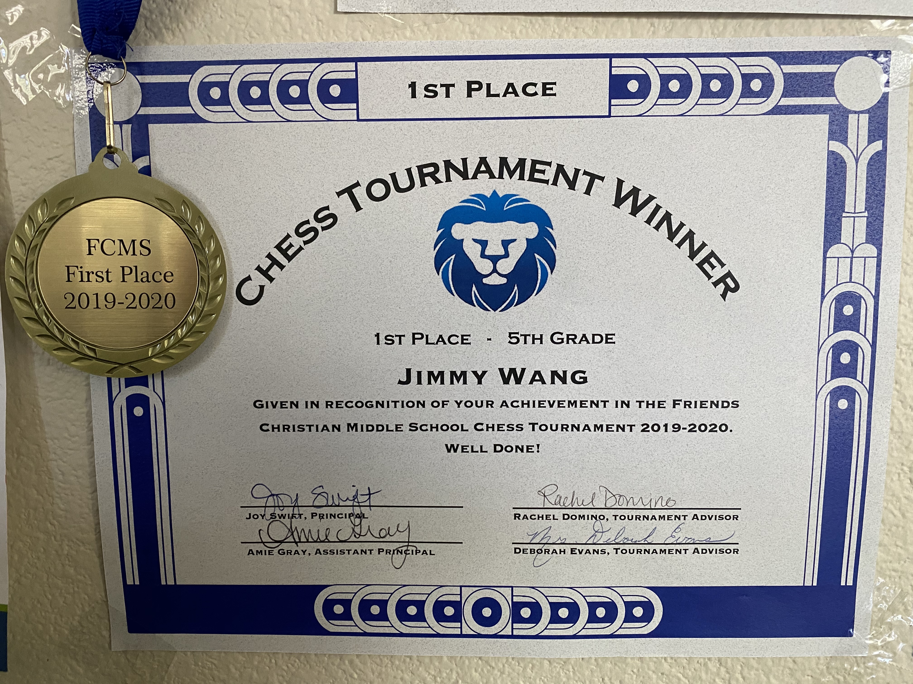
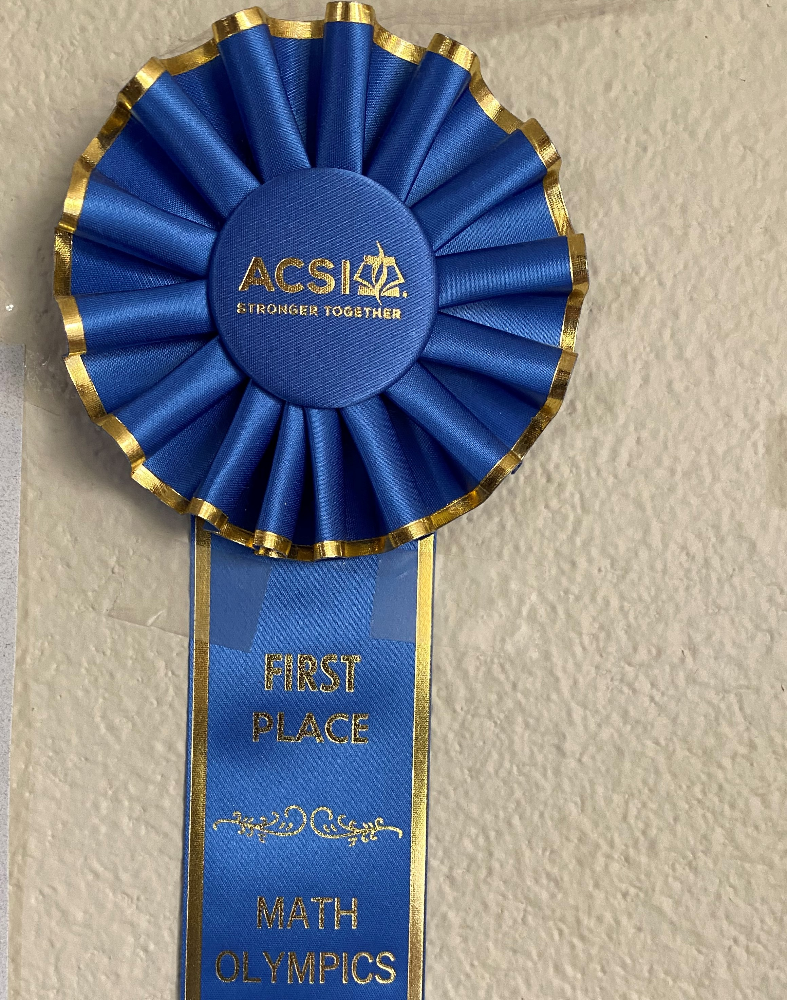

I am Jimmy Wang, I was born at Shanghai on 2009. I live at Los Angeles now. I study at Friends Christian
|
I have a goal, that is to make a game that many people play. To achieve that goal, I will need to have imagination, be strong in science,
have a good control of time and be healthy. This website is mostly to train my science and programing knowledge.
|
|
|
Computer Skills:I have learned some python, html, and I have just finished Java 1 training and ready to take Java II. I also have some
configuration experiences such as setting up a server in minecraft, running an application at Amazon. If you click here,
you can see a project built with Spring Boot. Even though it is quite simple, it has covered a lot of the knowledge regarding
web application development, from front end to back end.
|
Chess
|
Math
|